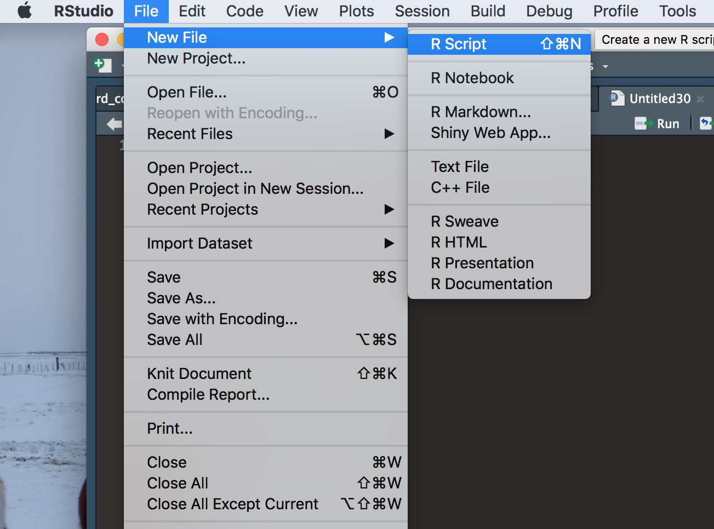

Course Material [1]
0. Getting Started!
Why Learning R?
- Free (impotrant!)
- Massive statistical packages
- More and more popular in both academia and industry
… Millions of other reasons
- Download R from CRAN
You can also Download an useful GUI called RStudio
RStudio
Create a script by clicking File >> New File >> R Script
To execute your code, highlight the code you wish to execute and press Ctrl + Enter

RGui (Windows)
Create a script by clicking File >> New Script
To execute your code, highlight the code you wish to execute and press F5

RGui (Mac OS)
Create a script by clicking File >> New Document
To execute your code, highlight the code you wish to execute and press Ctrl + Enter
Set up the working directory
getwd()List all the files/folders under the current working directory
dir()Change the working directory (mind the /)
setwd("/Users/chienlu/Desktop")Quit the R session
q()Exercise Pack 0
- Check your current directory with the function
getwd. - Change your working directory to your desktop and list all the file/folders
1. R as Calculator
You can start with playing around with R, use it as a calculator
1 + 3
#> [1] 4
6*(5-1)
#> [1] 24Some useful operators:
+: addition-: subtraction*: multiplication/: divisionx %% y: modulus (Remainder from division)x %/% y: integer division^ or **: exponentiation, e.g.3^2or3**2to compute \(3^2\)
? What is the output of the following code?
-1^2= ?(-1)^2= ?
You can also try out some more complicated (fancier) computations, such as Trigonometric functions (high school nightmare):
sin(): sinecos(): cosinetan(): tangentexp(): Exponential with base elog(): Logarithmlog10(): Logarithm with the base 10sqrt(): Square rootabs(): Absolute valueround(): Round the valuefloor(): Round down the valueceiling(): Round up the valuefactorial(): Factorial functiongamma(): Gamma functiondigamma(): Digamma function- …
? What are the solutions to the following equations
- sin(\(\frac{\pi}{2}\)) = ?
- cos(\(\pi\)) = ?
- tan(\(\frac{\pi}{4}\)) = ?
? Can you verify if the function factorial returns the correct result of \(5!\)?
5*4*3*2*1
#> [1] 120
factorial(5)
#> [1] 120You also can use function to define your own function (will go back to this later)
my_square<- function(x){
x^2
}
my_square(4)
#> [1] 16where <- is the assignment operator
Exercise Pack 1
- Calculate the volume of a sphere (ball) whose raduis \(r = 2\)
- What is \(35^\circ C\) in Fahrenheit (\(^\circ F\))?
- Use 5 different \(\theta\) values to calculate the result of \(sin(\theta)^2 + cos(\theta)^2\)
- In a right triangle with sides \(a = b = 2 < c\), how long is \(c\)? (Use Pythagorean Theorem)
2. Basic R Objects
Assign value
Use <- to assign a value to an object
x<- 1
x
#> [1] 1of course, = also works
x = 1
x
#> [1] 1Use class, mode or typeof to check the type of the object
x<- 1.1
class(x)
#> [1] "numeric"
mode(x)
#> [1] "numeric"
typeof(x)
#> [1] "double"Working environment
List all the objects under the current working environment
ls()Remove all the objects under the current working environment
rm(list = ls())Numbers
Numeric (real number)
x<- 0.8
class(x)
#> [1] "numeric"Complex number
x<- 3+0i
class(x)
#> [1] "complex"Scientific notation
x<- 9.6e-4 Infinity (use is.infinite or is.finite to test)
x<- 1/0
x
#> [1] Inf
is.infinite(x)
#> [1] TRUE
is.finite(x)
#> [1] FALSENot a number (undefined result, use is.nan to test)
x<- 0/0
x
#> [1] NaN
is.nan(x)
#> [1] TRUENull object (use is.null to test)
x<- NULL
is.null(x)
#> [1] TRUENot available/missing value (use is.na to test)
x<- NA
is.na(x)
#> [1] TRUE
is.nan(x)
#> [1] FALSEUse identical to check if two objects are identical
x<- 1e-3
y<- 0.001
identical(x, y)
#> [1] TRUELogical
x<- TRUE
x
#> [1] TRUE
y<- FALSE
y
#> [1] FALSEor
x<- T
x
#> [1] TRUE
y<- F
y
#> [1] FALSESome logical operators
!: not==: exactly equal to!=: not equal to&: and|: or<: less than<=: less than or equal to>: greater than>=: greater than or equal to
Strings
a <- "hello"
a
#> [1] "hello"
class(a)
#> [1] "character"
print("Hello R!")
#> [1] "Hello R!"Exercise Pack 2
- Check the types of the following objects
Inf - InfInf + Inf0/0sin(Inf)Inf/0
Vectors
All the elements in a vector should be of the same object type.
Use c to create a vector
## number
exp_1<- c(1, 2, 3, 4, 5)
exp_1
#> [1] 1 2 3 4 5
## logical
exp_2<- c(TRUE, FALSE, FALSE, TRUE)
exp_2
#> [1] TRUE FALSE FALSE TRUE
## string
exp_3<- c("I", "am", "a", "meaningless", "example")
exp_3
#> [1] "I" "am" "a" "meaningless" "example"or use vector to define an empty vector
emp_vec<- vector()
emp_vec
#> logical(0)Use seq to create a vector with sequential numbers
a<- seq(from = 1, to = 5, by = 1)
a
#> [1] 1 2 3 4 5or just simply:
a<- 1:5
a
#> [1] 1 2 3 4 5min()andmax(): Minimum value and maximum value within a vectorwhich.min()andwhich.max(): Index of the minimal element and maximal element of a vectorpmin()andpmax(): Element-wise minima and maxima of several vectorssum()andprod(): Sum and product of the elements of a vectorcumsum()andcumprod(): Cumulative sum and product of the elements of a vector
Concatenate vectors
vec_1<- c(1, 1, 1)
vec_2<- c(2, 2, 2)
vec_join<- c(vec_1, vec_2)
vec_join
#> [1] 1 1 1 2 2 2
vec_3<- c(3, 3, 3)
vec_join<- c(vec_1, vec_2, vec_3)
vec_join
#> [1] 1 1 1 2 2 2 3 3 3Subset a vector
a<- c(1, 2, 3, 4, 5)
# extract with indices
a[c(1, 3, 5)]
#> [1] 1 3 5
# extract with logicals
a[c(T, F, T, F, T)]
#> [1] 1 3 5
a %% 2 == 1
#> [1] TRUE FALSE TRUE FALSE TRUE
a[(a %% 2 == 1)]
#> [1] 1 3 5
# omit
a[-c(2, 4)]
#> [1] 1 3 5
a[-which(a %% 2 == 0)]
#> [1] 1 3 5NA values in a vector
a<- c(1, NA, 2, NA, 3)
a
#> [1] 1 NA 2 NA 3
b<- c(1, 2, 3, 4, 5)
b * c(1, NA, 1, NA, 1)
#> [1] 1 NA 3 NA 5
# replace NA with 0
a[is.na(a)]<- 0
a
#> [1] 1 0 2 0 3Vectorized computation
? ´a = c(1, 2, 3, 4)´ and ´b = c(1, 2, 3, 4)´ What is the value of ´a*b´?
Factors
Represente categorical data with specifying levels (e.g. gender, education). A factor is stored as a vector of integers with corresponding labels.
x<- c("Python user", "R user", "C++ user", "R user", "C++ user", "JAVA user", "R user")
f_x<- factor(x)
f_x
#> [1] Python user R user C++ user R user C++ user JAVA user
#> [7] R user
#> Levels: C++ user JAVA user Python user R user
levels(f_x)
#> [1] "C++ user" "JAVA user" "Python user" "R user"
nlevels(f_x)
#> [1] 4
class(f_x)
#> [1] "factor"
summary(f_x)
#> C++ user JAVA user Python user R user
#> 2 1 1 3or assign the labels you prefer
x<- c(1, 2, 1, 2, 1, 1, 1)
f_x<- factor(x, labels = c("male", "female"))
f_x
#> [1] male female male female male male male
#> Levels: male female
summary(f_x)
#> male female
#> 5 2or by spliting a vector into groups with the function cut
x<- c(12, 64, 47, 36, 31, 64, 25, 34, 6, 89)
f_x<- cut(x, c(0, 14, 64, 100))
f_x
#> [1] (0,14] (14,64] (14,64] (14,64] (14,64] (14,64] (14,64]
#> [8] (14,64] (0,14] (64,100]
#> Levels: (0,14] (14,64] (64,100]
levels(f_x)<- c("child", "labor", "aged")
summary(f_x)
#> child labor aged
#> 2 7 1Matrices
Define a matrix
x<- matrix(1:15, nrow = 3, ncol = 5)
x
#> [,1] [,2] [,3] [,4] [,5]
#> [1,] 1 4 7 10 13
#> [2,] 2 5 8 11 14
#> [3,] 3 6 9 12 15Subset a matrix
x<- matrix(1:15, nrow = 3, ncol = 5)
x[2,]
#> [1] 2 5 8 11 14
x[,1]
#> [1] 1 2 3
x[2,1:3]
#> [1] 2 5 8
x[1:2,c(1,3)]
#> [,1] [,2]
#> [1,] 1 7
#> [2,] 2 8Arrays
Define an array
x<- array(1:24, dim = c(4, 3, 2))
x
#> , , 1
#>
#> [,1] [,2] [,3]
#> [1,] 1 5 9
#> [2,] 2 6 10
#> [3,] 3 7 11
#> [4,] 4 8 12
#>
#> , , 2
#>
#> [,1] [,2] [,3]
#> [1,] 13 17 21
#> [2,] 14 18 22
#> [3,] 15 19 23
#> [4,] 16 20 24
x[3,,]
#> [,1] [,2]
#> [1,] 3 15
#> [2,] 7 19
#> [3,] 11 23
x[3,2,]
#> [1] 7 19
x[3,2,1]
#> [1] 7Lists
x<- list(name = "miina", age = 25, score = 1, pass = T, gender = "female")
length(x)
#> [1] 5
x$name
#> [1] "miina"
x[2]
#> $age
#> [1] 25
x[[3]]
#> [1] 1
x["pass"]
#> $pass
#> [1] TRUE
x[["gender"]]
#> [1] "female"Data Frames
A generalized matrix in which each column may have different object types.
dat<- data.frame(id = 1:5, age = c(15, 5, 11, 10, 95), city = c("Tampere", "Pori", "Tampere", "Helsinki", "Turku"))Exercise Pack 3
- Create a vector which its variance value equals to 0 and mean value equals to 5.
- Create a function which returns the sum of the maximum and the mininum value of the input vector
Use rep to create a vector with replicate elements
b<- rep(x = 1, times = 3)
b4. Basic Computation
For loop
for(i in 1:5){
print(i)
}
#> [1] 1
#> [1] 2
#> [1] 3
#> [1] 4
#> [1] 5While loop
i<- 1
while(i < 5){
i<- i + 2
}Apply functions apply, sapply, lapply
Exercise Pack
- Using a loop two print out all the prime numbers smaller than 50
Useful tips
You can use # to add comment, the code after will not be executed.
a<- c(1, 2, 3) #I have no idea why I created this vectorUse ? to call R help when you have difficulties.
?cFor efficient computation, try to use apply functions instead of for-loop